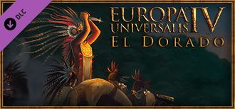

|  | |
| 概述 | |
| 類型 | 擴展包 |
| 發行日期 / 修補程式 | 2015-02-26 / 1.10 |
| 商店：擴展包 | Paradox /Steam |
| 商店：兵模包 | Paradox / Steam |
黃金國（El Dorado）是EU4的第5個內容擴展包，公佈於2015-01-25，[1]，隨1.10版本發售於2015-02-26[2]。
特色
- 複雜的自定義國家系統，包含自選國家理念和自定義君主。
- 遊玩納瓦特爾、因蒂和瑪雅宗教，體驗鮮血祭祀和太陽崇拜。
- 派征服者探尋黃金七城，派探險家週遊世界。
- 運寶船會滿載新世界的財富返回歐洲，而在路上會遭遇私掠艦圍追堵截。
- 派你的貿易船隊獵殺海盜。
- 和教皇保持良好關係，這樣就可以利用托爾德西里亞斯條約，在世界的一角畫地為王。
國家設計器
- 主條目：國家設計器
在此DLC中，玩家將可以自創國家。依設置不同，玩家會得到50~800點數（默認為200），並將其任意分配到省份、政府、國家理念等各個方面。
首先要選擇一個首都，然後可以自由增減省份。省份越富有，花費的點數越多。
然後，玩家可以自由選擇國家的外觀，包括國名、地圖顏色、旗幟等。外觀更改一律不消耗點數。
再之後，玩家可以選擇政體、君主（及儲君）的姓名、年齡、能力、國家科技組等等等等。每個選項都要花費不同的點數。
最後，玩家還要從近百個修正中選擇一套國家理念並設置其數值。大多數理念的最低一級數值是不需要點數的，但增強其效果則需要很多點數。同時在行政、外交、軍事三類中只擇其一，使得某一類修正超過了50%，也會消耗大量點數。
還有一些其他選項，如全球省份價值隨機化、全球省份價值均一化等，這些選項開啟後依然可以進行鐵人遊戲，但無法獲得任何成就。
納瓦特爾
阿茲特克和其他中美洲國家奉行納瓦特爾信仰。所有該宗教下的國家每年都會依自己的省份數增加末日計時。
高末日值增加科技和理念的花費。如果末日值達到100，納瓦特爾國家將行非常手段以避免末日發生。當前君主和其儲君將被血祭，而由一個0/0/0的新君上位。所有君主點數將清零，所有附屬國都會宣佈獨立，並會失去至多2個宗教改革。
「榮冠戰爭」的宣戰理由使納瓦特爾國家之間可以隨意宣戰，此理由下的勝利和征服將減少末日值。納瓦特爾國家也可以血祭其附屬國的君主和儲君，這會使末日值減少二位祭品的君主能力之和，但會激怒所有附屬國，使他們更傾向於獨立。
要從這種末日和血祭的輪迴之中解脫，就需要納瓦特爾宗教的徹底改革。共有5種改革，分別給予殖民者、厭戰減少、外交關係槽位等。每一次改革都至少需要5個附庸、無叛軍、正穩定、和不多於50的末日值。且在改革時，末日值+25且所有附屬國將宣佈獨立。一旦5項改革全部通行，然後只要接壤一個西方國家，就可以徹底改革宗教，獲得該國家80%的科技等級並可以西化（當前版本為接受思潮），並且永久去除末日機制。
納瓦特爾的五項改革分別為-0.05 厭戰、+1外交關係、+5%訓練度、+1殖民者和-20%提升穩定花費。
瑪雅
瑪雅國家信奉自己的宗教。與納瓦特爾類似，也需要宗教改革，但沒有末日機制。
瑪雅國家的改革，需要擁有至少20個省份、正穩定、無過度擴張。一旦推行改革，國家會瞬間縮水，並依文化、宗教、和與首都的距離等保留10個省份。其他省份或是加入他國，或是自行建國，你必須重新將其奪回。基礎保留省份雖為10個，但每多一項改革，就能多保留幾個省份。和納瓦特爾一樣，一旦5項全部完成並接壤西方國家，就可以徹底改革，接受其科技並永久擁有自己的宗教改革增益。
瑪雅宗教自帶+1正統信仰容忍和+1可能的顧問，五項改革則分別為-10%陸軍維護、-2全局叛亂、+10%步兵戰鬥力、+1殖民者和-20%造核花費。
因蒂
瑪雅和納瓦特爾的機制在於擴張和收縮，但因蒂則在於確保薩帕印卡的神子權威。因蒂國家的權威值會因遼闊土地而增加，會因增加省份自治而減少（可通過手動增加自治、叛軍要求、或事件選項）。權威值也影響多個因蒂宗教的獨特事件，並會降低叛亂，減少穩定花費。
因蒂國家在擁有100權威和至少10個省份的情況下可以改革，改革會將權威清零，並導致一場奪權內戰。如果內戰失敗，會失去2個改革，大大阻礙改革進程。因為沒有瑪雅和納瓦特爾那種擴張-收縮機制，因蒂國家的改革更為輕鬆，效果也更弱。
因蒂也自帶+1正統信仰容忍和-0.05自治減少，改革則給予+10%人力恢復速度、+1殖民者、+0.5年度正統、+0.05陸軍士氣和-10%造核花費。
海軍探索
有探險家且輕重船隻合計大於3的艦隊，可以在港口選擇任務以探索海域、測繪海岸或環遊世界。探索任務不可中止，其間不受任何損耗。
當玩家派遣船隻探索海域或海岸時，船隻會直奔該省份及周圍省份並探開之，而後返航。探索海岸會引發一系列事件，因為船員會登陸並與當地土著接觸。
外交科技9級以上的國家可以執行環遊世界，從麥哲倫海峽到好望角。船隻此時會正常損耗。第一個成功環遊世界的國家+100威望，其他成功的國家+10.
探險家有着此種特殊能力，但其能力點數比普通海軍上將少20%。
陸地探索
新的陸地探索系統稱作「探索黃金七城」，只有征服者領導下的部隊可於新世界執行。在執行中，部隊可以探索周圍地塊、開拓未知地域、抗擊土著居民，並可隨時中止任務。
在此探索當中，會有大量事件發生，包括食物短缺、土著貿易、或發現某些與黃金七城青春之泉有關的線索。跟着線索走下去會解鎖更多事件，這些事件可能把部隊引向死亡、可能引向其他寶藏、或是真的引向黃金七城。發現這些神秘傳說會帶來永久的稅收、貿易效率、威望等增益。
玩家也可以放棄此任務，可以以在更高的傳統下僱用更好的征服者。
和探險家相同，征服者也有20%的能力點數削減。[3]
首都在新世界的國家不適用此機制。
殖民商人
在此DLC中，10省份以上的殖民領會給宗主國提供1位商人。
內陸貿易
內陸節點間的商貿輸送現在由一種叫做商隊力量的新機制替代。內陸節點的商人之貿易力量將受所屬國的總稅收影響，最多+50.
運寶船
在此DLC中，殖民領的金礦將不為殖民領本身提供任何收入，轉而慢慢向運寶船上累積。一旦累積完成，運寶船就會出航。運寶船會沿貿易路徑而下，行遍所有殖民領之節點而後歸於宗主國的首都節點。如果這些節點上有私掠艦，他們會搶走一部分黃金。旅程完成之後，剩餘的黃金會加入宗主的國庫，同時也相應增加一部分的通貨膨脹。
貿易中心不在任何殖民領之節點下游的國家無法接收運寶船。此時，殖民領會自己留下黃金，並按比例正常上交關稅。
獵殺海盜
為防止私掠艦搶奪運寶船的黃金，國家可以派遣艦隊在某一節點獵殺海盜，這會依艦隊數量降低該節點處的海盜影響。
托爾德西里亞斯條約
在某殖民區域第一個組建殖民領天主教的國家，如果與教宗國的關係足夠好，就會獲得「教皇的授權」，使你在該殖民區域內的移民增長+10，並使其他天主教國家-20。
任何違反教皇授權的天主教國家，其與權限國和教宗國的關係均-50。並同時使其教廷影響-10。
獨立傾向變更
1.10版本對獨立傾向的更改影響全類型附屬國，包括但不限於附庸和被聯統國。現在所有附屬國都有對宗主國的獨立傾向，以關係、外交威望、相對實力和外交科技等級等多種因素綜合計算。衛戍領和自建附庸的基礎獨立傾向更低，忠誠度更高；反之日本大名國的忠誠度則更低。附庸會時刻注意同一宗主下其他附庸的軍事實力，如果他們認為所有附庸合力能讓日月換個新天，他們將蜂起而攻來。
只要獨立傾向小於50，那麼就算是「忠誠」。他們會好好上稅、派兵出戰、並會拒絕他國支持獨立的要求。
一旦高於50但小於100，就算是「不忠」。他們不會再交任何稅收或關稅、不會再派兵出戰（除非是自己被宣戰）、並會時刻搜尋會支持自己獨立的國家或其他叛逆的附庸。一旦他們找到了支持或盟友，就會依其軍事實力增加相應的獨立傾向。
獨立傾向達到100，其態度就為「叛逆」。他們不僅不會盡附屬國應盡之責，還會以獨立的理由向宗主宣戰。宣戰時所有其聯合的其他附屬國和支持聯盟中任一附屬獨立的他國會自動參戰，所有聯合中的附屬國會在勝利時同時獨立。
自建附庸
自建附庸介面採用國家設計器中的新選項。
革命
- 參見：革命
革命國家基於其革命旗幟顏色獲取動態三色旗。
事件
此版本新增超過40個印加和阿茲特克的新事件。
地形重製
在免費的更新中，省份地形和地形地圖模式均被重製。多數地形的描繪都更加真實，且地圖經過微調，現在可以更容易從地圖的省份外觀上分辨其地形了。
與此同時還新增了4種地形：
- 高地：高海拔無林木區域（如蘇格蘭高地）。之前的丘陵地形現修正為林木覆蓋的，更為偏僻的地形。
- 旱地：乾旱，但仍可耕作的區域，如西班牙南部。
- 耕地：土地富饒的人口耕地雙密集區域，如北意大利。
- 熱帶草原：旱季雨季交替的大面積開闊區域，如非洲大草原。
開發者日誌
- 主條目：開發者日誌
所有關於黃金國擴展包、1.10版本和1.11 版本的開發者日誌。
- 1.10 版本
| 編號 | 原文連結 | 描述 | 日期 |
|---|---|---|---|
| 1 | Nahuatl, Exploration & Treaty of Tordesillas | The mechanics of the new Nahuatl religion, changes to how naval exploration works, and the addition of a system to simulate how the New World was historically divided between Spain and Portugal | 2015-01-22 |
| 2 | The Nation Designer | Introduction to the nation designer which enables customized nations. | 2015-01-29 |
| 3 | Inti, Maya and Liberty Desire | Introduction to the Inti and Maya religions, and the changes made to liberty desire. | 2015-02-05 |
| 4 | Seven Cities of Gold and Colonial Merchants | Changes to land exploration, caravan power - a new mechanic for inland trade and dynamic historical events for South- and Mesoamericans. | 2015-02-12 |
| 5 | Treasure fleets and pirate hunting | New treasure fleet mechanic and its associated pirate hunting mechanic, and changes to terrain | 2015-02-19 |
- 1.11 版本
| 編號 | 原文連結 | 描述 | 日期 |
|---|---|---|---|
| 6 | Dynamic Random Nations teaser | Dynamic random nations mode, that creates custom countries instead of using historical ones. | 2015-03-04 |